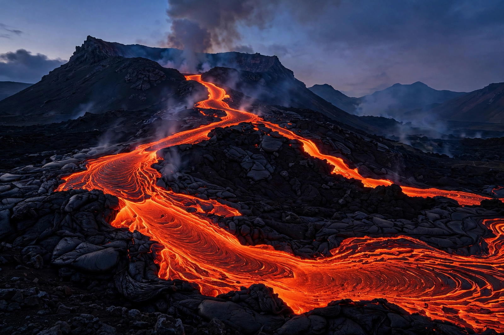

From Wikipedia, the free encyclopedia
| Magma | |
|---|---|
 Magma that reaches the surface is called lava | |
| Composition | Molten rock, suspended crystals and dissolved volatiles |
| Temperature | ~700 °C (rhyolitic) to ~1,300 °C (basaltic/komatiitic) |
| Types | Basaltic, andesitic, rhyolitic (by silica content) |
Magma (from Ancient Greek μάγμα, "thick unguent") is the molten or semi-molten natural material from which all igneous rocks are formed. It is found beneath the surface of the Earth, generated by partial melting of rocks in the mantle or crust, and consists of a liquid silicate melt together with suspended mineral crystals, rock fragments and dissolved gases such as water vapour and carbon dioxide. Magma that erupts onto the surface is called lava; magma that cools underground crystallises into intrusive (plutonic) igneous rocks such as granite and gabbro.
Magma forms by partial melting, which occurs by three main mechanisms: decompression melting, where rising mantle rock melts as pressure falls (at mid-ocean ridges and mantle plumes); flux melting, where volatiles released from a subducting slab lower the melting point of the mantle wedge; and heat transfer, where hot magma intruding cooler crust melts its surroundings. Because melting is partial — typically a few to a few tens of percent — magma's composition differs from its source rock.
Magmas are classified by silica content. Basaltic (mafic) magma (~45–52% SiO2) is hot, fluid and low in viscosity, producing shield volcanoes and flood basalts. Andesitic (intermediate) magma (~52–63%) typifies subduction-zone stratovolcanoes. Rhyolitic (felsic) magma (~63–77%) is cooler and extremely viscous; trapped gas can drive explosive eruptions and caldera-forming events. Viscosity depends strongly on silica content, temperature and dissolved water.
Being less dense than surrounding rock, magma rises and ponds in magma chambers, where it evolves by fractional crystallisation, assimilation of wall rock and mixing with other magmas. Its ascent and eruption are studied by volcanology, using seismicity, gas emissions and ground deformation. Crystallised magma bodies — batholiths, dikes and sills — form much of the continental crust's interior and concentrate valuable ore deposits.